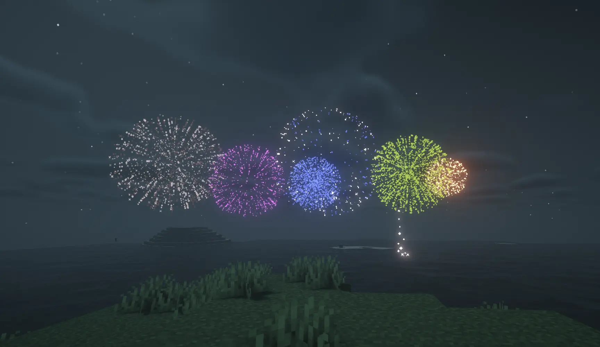

Minecraft with Code Project
Fireworks Project
マイクラ花火師を目指す。
Minecraft と C# プログラミングによる、花火大会の実現と演出。
マイクラで花火大会を実現する
Fireworks Project は Minecraft で打ち上げ花火を楽しめるコンテンツを提供するプロジェクトです。マイクラの世界で花火を打ち上げるためには花火アイテムの製作と、打ち上げるための装置（ディスペンサー）が必要ですが、本プロジェクトではC#プログラミングを用いて打ち上げ花火を実現します。

花火の演出
C#プログラミングを用いてマイクラ内で花火を打ち上げている様子です。花火を打ち上げる際にはNBTというマイクラのデータ構造を使用します。このデータをプログラムから定義し、時間差を加えることで動画のような演出が可能です。